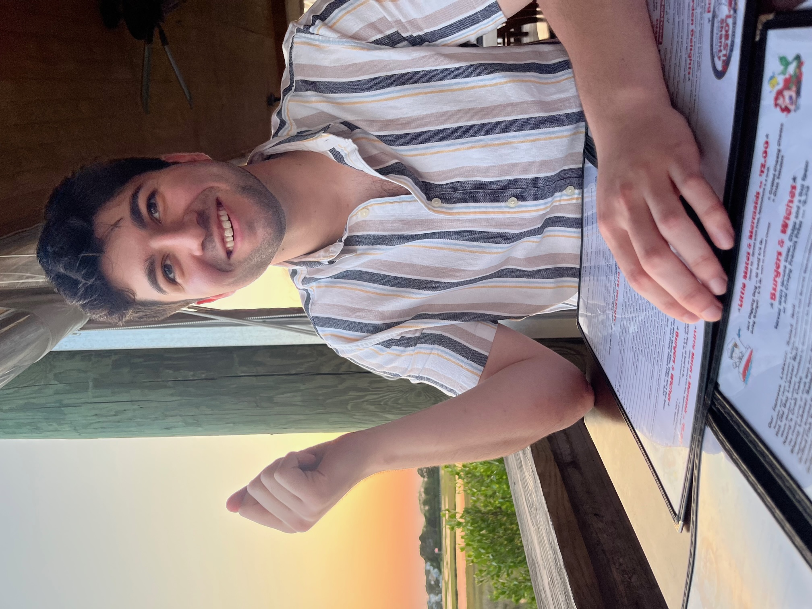

Mateo Flores
HOME
|
ABOUT
|
PORTFOLIO
Rising
full-stack web developer
, athlete, teacher
Front-end developer interested in perfecting the line between peak design and practicality. 
"Everything Should Be Made as Simple as Possible, But Not Simpler."
-Unknown